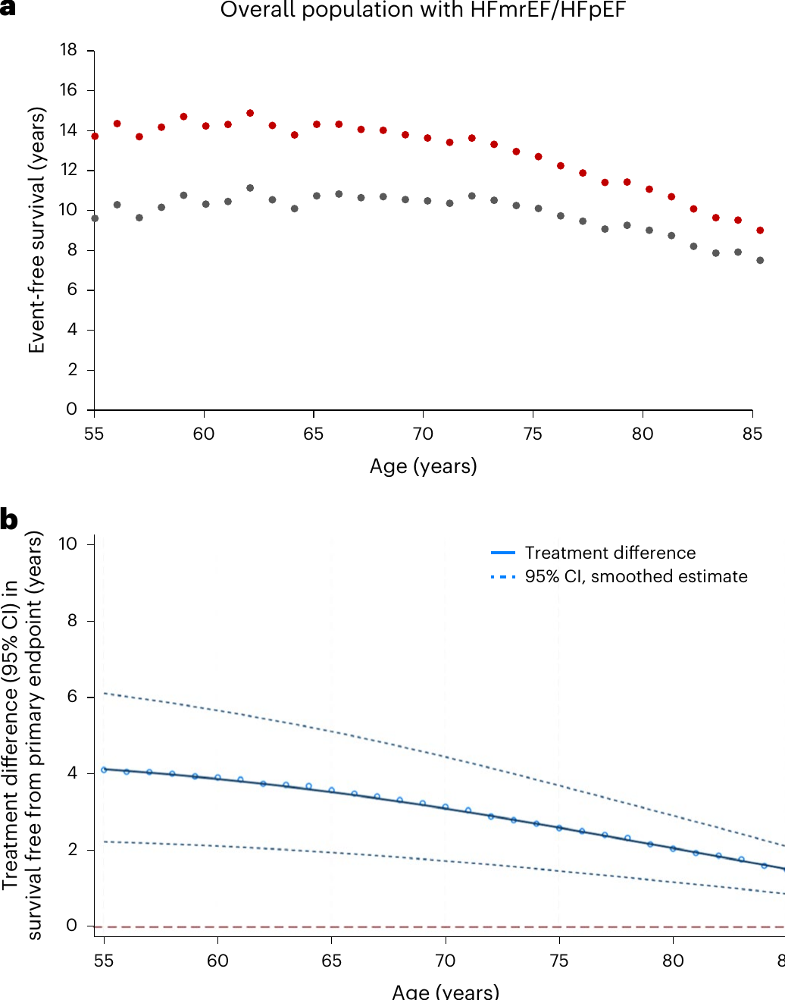
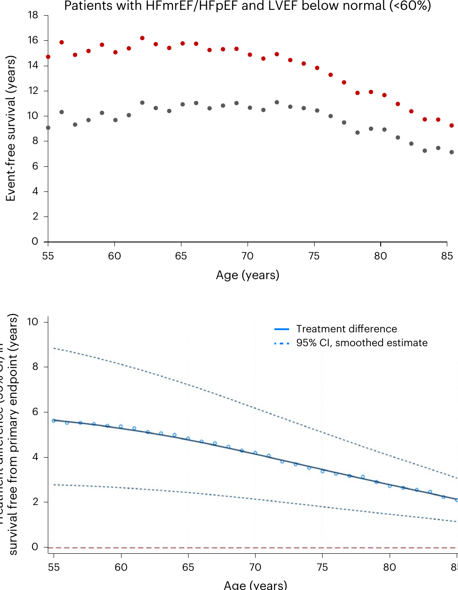

本ページで使用する略語一覧
| 略語 | 正式名称 — 日本語訳 |
| HFmrEF | Heart Failure with Mildly Reduced Ejection Fraction — 駆出率軽度低下心不全（LVEF 40–49%） |
| HFpEF | Heart Failure with Preserved Ejection Fraction — 駆出率保持心不全（LVEF ≥50%） |
| SGLT2i | Sodium-Glucose Cotransporter-2 Inhibitor — SGLT2阻害薬（本解析ではダパグリフロジン） |
| nsMRA | Nonsteroidal Mineralocorticoid Receptor Antagonist — 非ステロイド型MRA（本解析ではフィネレノン） |
| ARNI | Angiotensin Receptor Neprilysin Inhibitor — アンジオテンシン受容体・ネプリライシン阻害薬（サクビトリル/バルサルタン） |
| MRA | Mineralocorticoid Receptor Antagonist — ミネラルコルチコイド受容体拮抗薬 |
| LVEF | Left Ventricular Ejection Fraction — 左室駆出率 |
| HR | Hazard Ratio — ハザード比 |
| CI | Confidence Interval — 信頼区間 |
| NNT | Number Needed to Treat — 治療必要数 |
| NT-proBNP | N-terminal pro-B-type natriuretic peptide — NT-プロBNP |
| eGFR | estimated Glomerular Filtration Rate — 推算糸球体濾過量 |
| NYHA | New York Heart Association — ニューヨーク心臓協会（心機能分類） |
SECTION 1 HFpEFにおける治療の変遷
薬物療法の乏しい時代からの転換
HFpEF（駆出率保持心不全）は、近年までエビデンスに基づく薬物療法が極めて限られていた疾患領域だった。2023年以前、主要な診療ガイドラインはHFpEFに対してクラスI（強く推奨）の特異的薬物療法（利尿薬以外）を与えていなかった。しかしその後、SGLT2阻害薬が心血管アウトカムを改善することが示され、LVEF全域にわたる心不全（HFpEFを含む）に対してクラスIのガイドライン推奨を得た。
続いて非ステロイド型MRAであるフィネレノン（FINEARTS-HF試験）がHFmrEF/HFpEFにおける有効性・安全性を示し、米国FDA承認を取得した。またARNIサクビトリル/バルサルタン（PARAGON-HF試験）は主要エンドポイントを僅差で達成できなかったものの、LVEF正常以下（<60%）のサブグループで有効性が示され、多くの国で適応取得に至っている。
これら3薬剤はそれぞれ個別のRCTで評価されており、平均追跡期間は2〜3年と短い。さらに各試験で背景治療が異なるため、長期にわたる併用療法の絶対的ベネフィットは明確ではなかった。本研究はこの問いに答えるために、DELIVER・FINEARTS-HF・PARAGON-HFのクロストライアル解析を実施した。
SECTION 2 3つの試験の設計
試験概要比較
| 試験 | 比較 | 対象 n | LVEF | 追跡期間 | 登録期間 |
|---|---|---|---|---|---|
| DELIVER | ダパグリフロジン vs プラセボ | 6,263例 | >40% | 中央値 2.3年 | 2018〜2021年（20か国350施設） |
| FINEARTS-HF | フィネレノン vs プラセボ（目標用量20 or 40 mg） | 6,001例 | ≥40% | 中央値 2.7年 | 2020〜2023年（37か国654施設） |
| PARAGON-HF | サクビトリル/バルサルタン vs バルサルタン | 4,796例 | ≥45% | 中央値 2.9年 | 2014〜2016年（43か国848施設） |
3試験ともにNYHA II〜IV度の症状を有するHF患者を対象とし、心構造異常（左室肥大または左房拡大）と上昇したナトリウム利尿ペプチド値が組み入れ基準に含まれた。PARに-HFでは無作為化前にhalf-target用量の両薬剤を忍容できる患者のみが登録された（single-blind run-in）。
ベースライン特性と背景治療
3試験とも患者の平均年齢は72〜73歳、女性44〜52%と均衡しており、合併症が高頻度だった。注目すべき背景治療の状況として、SGLT2iはPARで0.6%・DELIVERでは未使用・FINEARTSでは14%が内服、MRAはPARAGONで26%・DELIVERで43%・ARNIはDELIVERで5%・FINEARTSで9%だった。
| 特性 | DELIVER | FINEARTS-HF | PARAGON-HF |
|---|---|---|---|
| 年齢（歳） | 72 ± 10 | 72 ± 9 | 73 ± 8 |
| 女性 | 2,747 (44%) | 2,732 (46%) | 2,479 (52%) |
| LVEF（%） | 54 ± 9 | 53 ± 8 | 58 ± 8 |
| NYHA III/IV | 1,549 (25%) | 1,854 (31%) | 951 (20%) |
| 心房細動 | 3,552 (57%) | 3,273 (55%) | 2,521 (53%) |
| 糖尿病 | 2,806 (45%) | 2,439 (41%) | 2,062 (43%) |
| ループ利尿薬 | 4,811 (77%) | 5,239 (87%) | 3,757 (78%) |
| ARNI使用 | 301 (5%) | 513 (9%) | — |
| SGLT2i使用 | — | 817 (14%) | 28 (0.6%) |
| MRA使用 | 2,667 (43%) | — | 1,239 (26%) |
| β遮断薬 | 5,167 (83%) | 5,095 (85%) | 3,821 (80%) |
解析の枠組み（組み合わせ方）
本研究は間接比較法（indirect comparison）を用いて、各試験の個別治療効果から包括的併用療法の推定効果を算出するクロストライアル解析である。治療効果は加算的（各薬剤が独立してベネフィットをもたらす）と仮定した。
（DELIVERとFINEARTS-HFから推定）
（DELIVER・FINEARTS-HF・PARAGON-HFから推定）
PARは能動対照試験（vs バルサルタン）のため、CHARM-Preserved試験のデータを用いて「仮想プラセボ対照」への換算を行ったうえでARNIの相対的治療効果を算出した。主要エンドポイントは心血管死または心不全増悪（HF入院・外来強化治療）の複合。
SECTION 3 各薬剤の個別効果（主要エンドポイントに対するHR）
全体集団（HFmrEF/HFpEF）における個別HR
95%CI 0.73–0.95
95%CI 0.74–0.94
（推定複合効果）
95%CI 0.59–0.81
SGLT2iとnsMRAはそれぞれ独立して心血管死または心不全増悪を有意に減少させ、2剤の推定複合効果はHR 0.69（95%CI 0.59–0.81）——すなわちリスク31%減少と推定された。感度解析として、SGLT2i効果をEMPEROR-Preservedとのメタ解析値、MRA効果をFINEARTS-HFとTOPCATのメタ解析値で置換しても、複合HR 0.70（95%CI 0.61–0.79）と同等の結果であった。
LVEF正常以下（<60%）サブ集団における個別HR
このサブ集団にはDELIVER 4,372例・FINEARTS-HF 4,846例・PARAGON-HF 2,070例が含まれる。
95%CI 0.73–0.92
95%CI 0.76–0.94
95%CI 0.75–1.02
リスク39%減少（vs 標準治療）
ARNIをさらに仮想プラセボに対比させると（SGLT2i + nsMRA + ARNIを仮想プラセボと比較）、HR 0.53（95%CI 0.39–0.71）——リスク47%減少と推定された。
SECTION 4 ガイドライン区分別の効果推定
HFmrEF vs HFpEF それぞれの推定効果
HR 0.68（95%CI 0.56–0.83）
→ リスク 32% 減少
HR 0.58（95%CI 0.40–0.85）
→ リスク 42% 減少
HFmrEF（LVEF 40〜50%）ではSGLT2i・nsMRA・ARNIの3剤が適応となり、HFpEF（LVEF ≥50%）よりも大きな相対リスク減少が推定された。これはARNIの上乗せ効果が加わるためである。
感度解析（エンドポイント変更）
競合リスク（死亡）を考慮するため、エンドポイントを「全死亡または心不全増悪」に変更した感度解析でも HR 0.76（95%CI 0.66–0.87）と有意な効果が持続した。また「心血管死または心不全入院（外来強化治療を除く）」でも HR 0.71（95%CI 0.60–0.84）と一貫していた。
SECTION 5 3年間の絶対リスク減少と治療必要数
ベースラインとなるイベント率
本解析では、DELIVER試験の対照群（1,754例、平均年齢72.5±9.0歳、女性46.6%）を基準集団とした。追跡期間の中央値2.2年で330件の一次エンドポイントが観察され、イベント率 9.1件/100人年（95%CI 8.1–10.1）であった。LVEF正常以下（<60%）サブ集団（1,123例）の中央値2.3年追跡では211件（イベント率 9.1件/100人年、95%CI 7.9–10.4）であった。
3年間の包括的薬物療法によるベネフィット
全HFmrEF/HFpEF
全HFmrEF/HFpEF
LVEF <60% サブ集団
これらの範囲は、推定された複合ハザード比の95%信頼区間に対応したものである（下限→上限のベネフィット推定）。NNT 9〜25という数値は、心不全の薬物療法として臨床的に十分意義のある規模と解釈される。
SECTION 6 65歳患者における生涯予測
包括的薬物療法で何年延長されるか
DELIVER試験対照群のデータに推定複合治療効果を適用し、年齢ベースの保険数理的手法を用いて長期イベントフリー生存期間（心血管死またはHF増悪を起こさない期間）を推定した。
予測イベントフリー期間
（65歳より、95%CI 9.3–12.1）
予測イベントフリー期間
（65歳より、95%CI 12.7–15.9）
（全HFmrEF/HFpEF）
95%CI 2.0–5.2年
LVEF <60% サブ集団（65歳）：SGLT2i + nsMRA + ARNI
95%CI 9.2–12.6
95%CI 13.4–18.2
95%CI 2.5–7.3年
SECTION 7 年齢別イベントフリー期間の延長効果（55〜85歳）
若いほど大きいが高齢でも意味がある
治療開始年齢が若いほど残余寿命が長く、包括的薬物療法による追加イベントフリー期間が大きくなる。しかし85歳以上においても、臨床的に意義のある絶対的ベネフィットが予測された。
| 治療開始年齢 | 追加イベントフリー期間 （全HFmrEF/HFpEF、SGLT2i+nsMRA） |
|---|---|
| 55歳 | 4.1年（95%CI 2.2–6.1） |
| 65歳 | 3.6年（95%CI 2.0–5.2） |
| 75歳 | 推定中央値 約2〜3年（smoothed estimate） |
| 85歳 | 1.5年（95%CI 0.9–2.1） |
85歳でも1.5年（95%CI 0.9–2.1）の追加イベントフリー期間が予測された。年齢に関わらず、包括的薬物療法の長期ベネフィットは「meaningful（臨床的に意義のある）」と位置づけられる。


感度解析：薬剤効果減弱を仮定しても頑健性を保つ
以下の保守的仮定のもとでも、長期ベネフィットは臨床的に意味のある水準を維持した。
SECTION 8 各試験における主要有害事象
試験別の主要有害事象（治療群 vs 対照群）
| 有害事象 | DELIVER ダパグリ vs プラセボ |
FINEARTS-HF フィネレノン vs プラセボ |
PARAGON-HF ARNI vs バルサルタン |
|---|---|---|---|
| 重篤な有害事象（いずれかの） | 43.5% vs 45.5% | 38.7% vs 40.5% | 58.9% vs 59.0% |
| 腎障害 | 0.3% vs 0.2% | 2.0% vs 1.2% | 1.6% vs 1.7% |
| 低血圧 （定義は試験により異なる） |
0.2% vs 0.0% | 18.5% vs 12.4% | 15.8% vs 10.8% |
| 高カリウム血症（>5.5 mmol/L） | （未収集） | 14.3% vs 6.9% | 13.2% vs 15.3% |
フィネレノン使用時の主な注意点：①低血圧（収縮期血圧<100 mmHg）がプラセボ比で約6ポイント高率（18.5% vs 12.4%）、②高カリウム血症（K >5.5 mmol/L）がプラセボ比で約7ポイント高率（14.3% vs 6.9%）。ただし薬剤中止後には血行動態・腎機能・カリウムの変化は完全に可逆的であることが示されている。
多剤併用時の相互安全性
SGLT2i・nsMRA・ARNIはすべて血圧降下作用を有するため、同時開始時には加算的血圧低下が生じうる。また，MRAとSGLT2i同時開始により腎機能の急性低下が出現することがあるが、これは完全に血行動態性のものであり尿細管障害や長期予後不良とは関連しないとされる。
重要な知見として、フィネレノンによる高カリウム血症リスクはSGLT2iまたはARNIとの同時使用によって低減される可能性が示されており（ARNI+MRAの組み合わせは単独MRAより高カリウム血症リスクが低い）、これら薬剤の組み合わせはむしろ安全性の観点でも相補的と考えられる。
導入の原則：STRONG-HF試験を含む実装試験では、多剤の急速な順次導入は概ね安全と示されているが、虚弱や臨床的不安定性が予測される患者では段階的・緩徐な導入が推奨される。
SECTION 9 3つの中心的前提条件
解析の根拠となる仮定と検証
加算性（各薬剤が独立してベネフィットをもたらす）：各薬剤は異なる作用機序を持ち既知の薬力学的相互作用がない。各試験のサブグループ解析では、背景治療によって治療効果が減弱する一貫したエビデンスはない。HFpEFでのSGLT2i＋MRA同時使用試験（SOGALDI-PEF）および慢性腎臓病でのSGLT2i＋フィネレノン試験でも加算的効果が実証されている。
治療効果の長期持続性：RCTの追跡期間は2〜3年だが、ガイドラインでは無期限継続が推奨される。本研究では治療効果が安定すると仮定して長期曲線を外挿した（検証済みの保険数理的手法）。なお、フィネレノン・エンパグリフロジン中止後30日以内に臨床的利益が急速に減衰することも確認されており、長期継続の重要性が裏付けられている。
実臨床への外挿性：各試験は厳格な組み入れ基準のもとで実施されており（特にPARでは run-in 期間あり）、実臨床での有効性は試験結果より低い可能性がある。また服薬アドヒアランスは試験環境と実臨床で異なる。これらを踏まえ、著者らは意図的に保守的な解析的選択を行い、複数の感度解析で頑健性を検証した。
本解析が考慮しなかった重要な事項
以下は解析の範囲外であり、実臨床での意思決定において別途検討が必要である。
- コスト・アクセス・ポリファーマシー：3剤（場合によっては4剤以上）の長期使用に伴う経済的・実務的課題
- 死亡率への影響：各試験単独では心血管死亡・全死亡の有意な減少を示せておらず、本解析でも死亡アウトカムへの生涯ベネフィットは検討されていない
- GLP-1受容体作動薬・GIP/GLP-1受容体作動薬：肥満型HFpEF（BMI ≥30）に対する小規模試験（約500〜750例）では臨床的ベネフィットが示されているが、大規模試験のデータを待って本解析には含めなかった
- RAASi（ACE阻害薬・ARB）単独：HFpEFに対する一次試験で主要エンドポイントを達成できなかったため対象外
HFrEF（駆出率低下心不全）においては、ARNI・β遮断薬・MRA・SGLT2iの4本柱療法（5経路標的）で65歳患者に6年以上の追加イベントフリー期間が推定されている（Vaduganathan et al. Lancet 2020）。本研究で示されたHFmrEF/HFpEFにおける3.6〜4.9年の追加ベネフィットは、HFrEFほどではないものの、長年治療選択肢がなかった疾患領域における画期的な進展である。HFpEFが「systemic syndrome（全身性疾患）」として認識され、複数経路への同時介入の重要性がHFrEFと共通する点が強調されている。
SUMMARY 本論文のキーメッセージ
出典：Vaduganathan M, Claggett BL, Chatur S, et al. Lifetime benefits of comprehensive medical therapy in heart failure with mildly reduced or preserved ejection fraction. Nature Medicine. Published online October 6, 2025.
DOI：https://doi.org/10.1038/s41591-025-04037-3
本資料は教育目的で作成したサマリーです。診断・治療方針の決定には必ず原典を参照してください。
制作：ICU 関谷